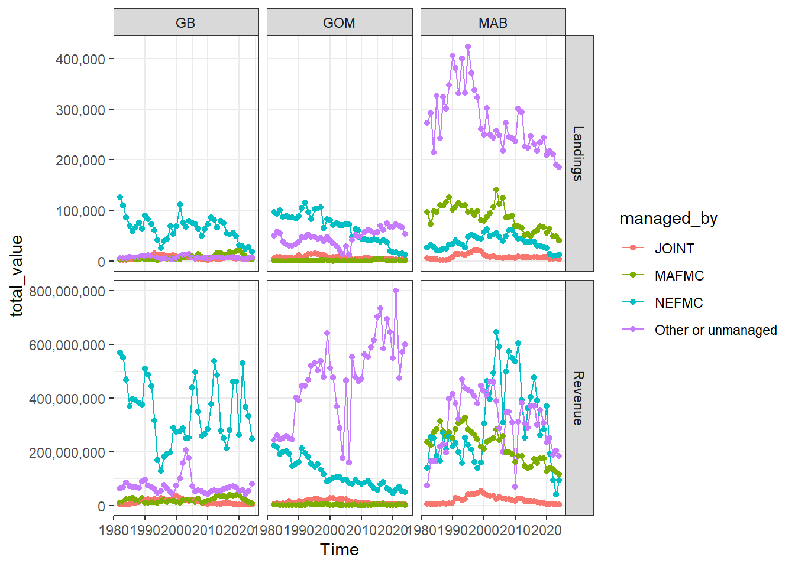
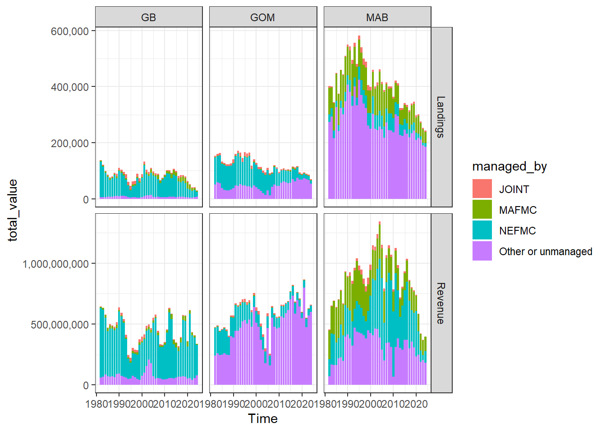
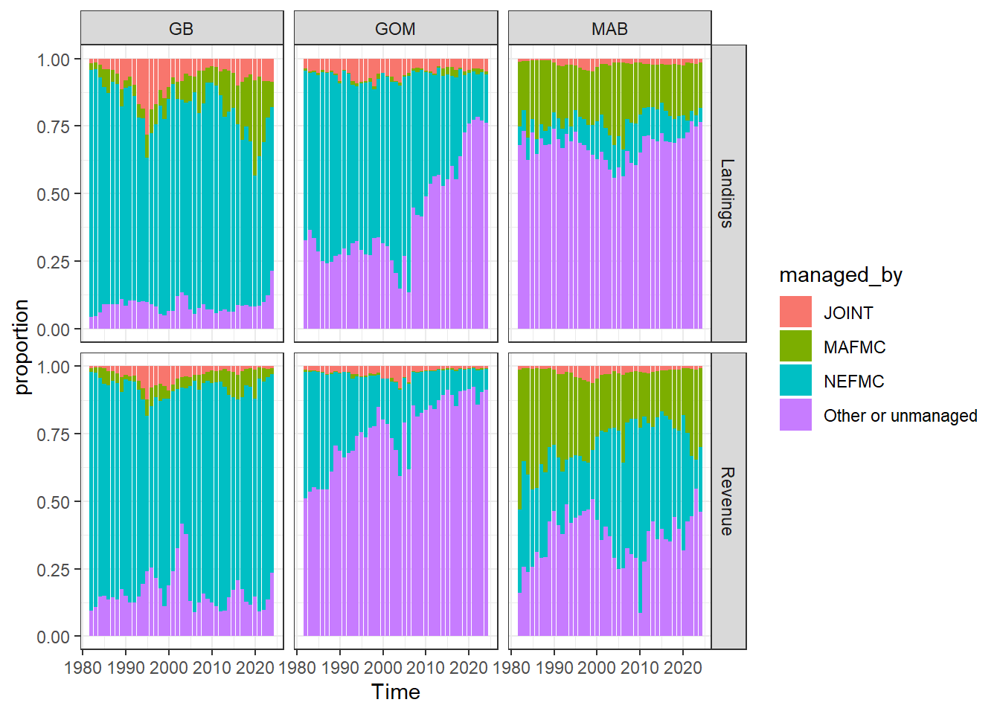
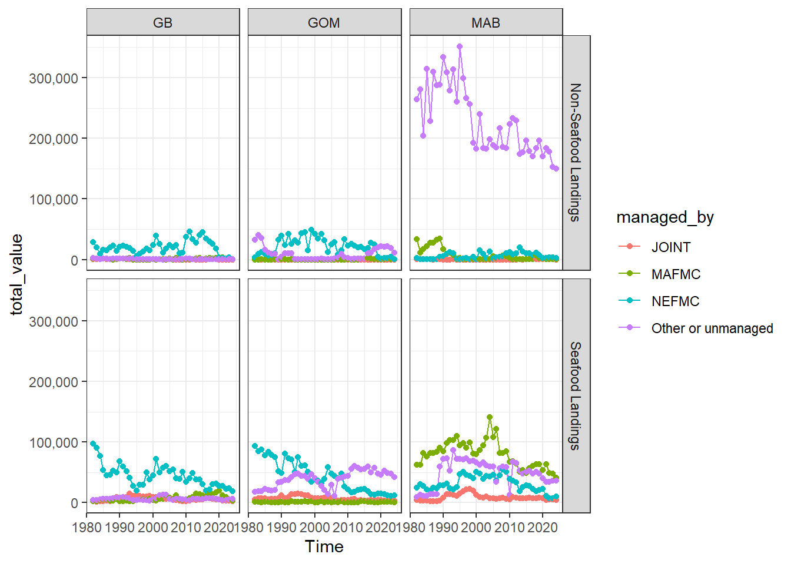
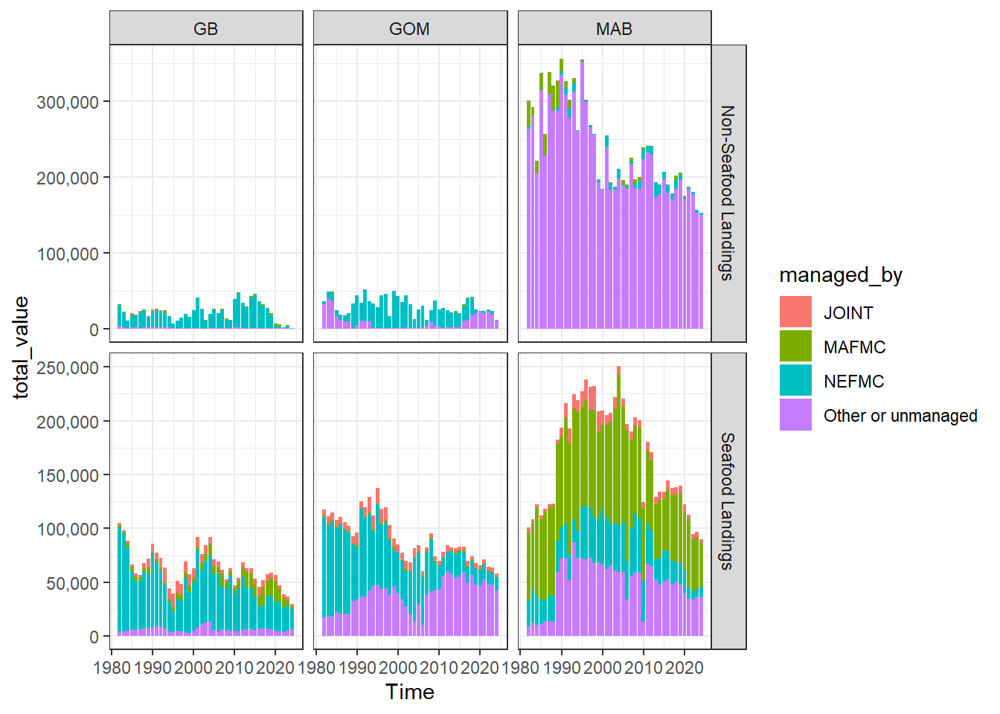
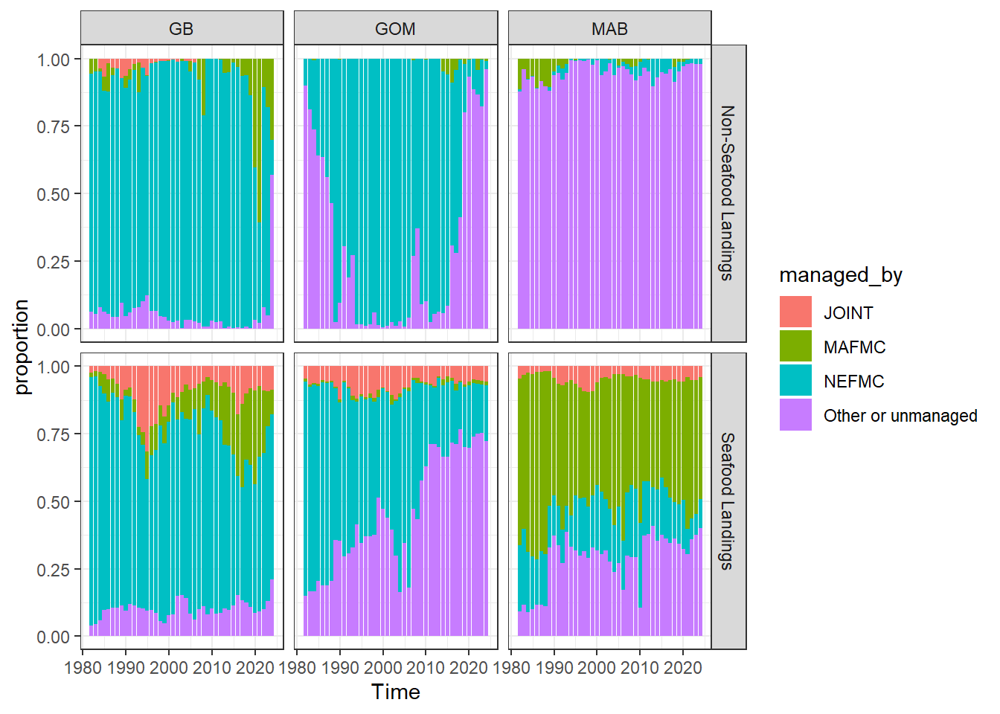

new_comdat <- ecodata::comdat |>
dplyr::mutate(
category = dplyr::case_when(
stringr::str_detect(Var, "Landings") ~ "Landings",
stringr::str_detect(Var, "Revenue") ~ "Revenue",
TRUE ~ "Other"
),
details = dplyr::case_when(
stringr::str_detect(Var, "US only") ~ "US only",
stringr::str_detect(Var, "Seafood Landings") ~ "Seafood Landings",
stringr::str_detect(Var, "Landings weight$") ~ "Landings weight",
stringr::str_detect(Var, "Revenue") ~ "Revenue",
TRUE ~ NA_character_
),
managed_by = dplyr::case_when(
stringr::str_detect(Var, "NEFMC") ~ "NEFMC",
stringr::str_detect(Var, "MAFMC") ~ "MAFMC",
stringr::str_detect(Var, "JOINT") ~ "JOINT",
# "Other managed" is the species not managed by NE or Mid
# https://github.com/NEFSC/READ_EDAB_SOE_Workflows/blob/main/R/comdat.R#L206
# could be state managed or unmanaged
stringr::str_detect(Var, "Other managed") ~ "Other or unmanaged",
TRUE ~ NA_character_
),
guild = dplyr::case_when(
stringr::str_detect(Var, "Apex Predator") ~ "Apex Predator",
stringr::str_detect(Var, "Benthivore") ~ "Benthivore",
stringr::str_detect(Var, "Benthos") ~ "Benthos",
stringr::str_detect(Var, "Other Other") ~ "Other",
stringr::str_detect(Var, "Piscivore") ~ "Piscivore",
stringr::str_detect(Var, "Planktivore") ~ "Planktivore",
TRUE ~ "All"
)
) |>
dplyr::filter(
!EPU %in% c("SS", "OTHER", "Other"),
Time > 1981
)comdat exploration
Exploring who manages the things that are caught
Create the data with the right resolution:
Plot by council and EPU:
## plot landings by council x EPU ----
comdat_council_epu <- new_comdat |>
dplyr::filter(
!is.na(managed_by),
details == "Landings weight" |
details == "Revenue"
) |>
dplyr::group_by(Time, EPU, managed_by, category) |>
dplyr::summarise(total_value = sum(Value, na.rm = TRUE)) |>
dplyr::ungroup()`summarise()` has grouped output by 'Time', 'EPU', 'managed_by'. You can
override using the `.groups` argument.### line plot ----
comdat_council_epu |>
ggplot2::ggplot(ggplot2::aes(x = Time, y = total_value, color = managed_by)) +
ggplot2::geom_line() +
ggplot2::geom_point() +
ggplot2::facet_grid(
cols = ggplot2::vars(EPU),
rows = ggplot2::vars(category),
scales = "free_y"
) +
ggplot2::theme_bw() +
ggplot2::scale_y_continuous(labels = scales::comma)
### stacked bar plot ----
comdat_council_epu |>
ggplot2::ggplot(ggplot2::aes(x = Time, y = total_value, fill = managed_by)) +
ggplot2::geom_col() +
ggplot2::facet_grid(
cols = ggplot2::vars(EPU),
rows = ggplot2::vars(category),
scales = "free_y"
) +
ggplot2::theme_bw() +
ggplot2::scale_y_continuous(labels = scales::comma)
### proportions ----
comdat_council_epu |>
dplyr::group_by(Time, EPU, category) |>
dplyr::mutate(proportion = total_value / sum(total_value, na.rm = TRUE)) |>
ggplot2::ggplot(ggplot2::aes(x = Time, y = proportion, fill = managed_by)) +
ggplot2::geom_col() +
ggplot2::facet_grid(
cols = ggplot2::vars(EPU),
rows = ggplot2::vars(category),
scales = "free_y"
) +
ggplot2::theme_bw() +
ggplot2::scale_y_continuous(labels = scales::comma)
Seafood and non-seafood landings:
# find non-seafood landings ----
non_seafood_landings <- new_comdat |>
dplyr::filter(
!is.na(managed_by),
details == "Landings weight" |
details == "Seafood Landings"
) |>
dplyr::select(-Var) |>
tidyr::pivot_wider(names_from = details, values_from = Value) |>
dplyr::mutate(
Value = `Landings weight` - `Seafood Landings`,
details = "Non-Seafood Landings"
) |>
dplyr::select(-`Landings weight`, -`Seafood Landings`)
seafood_dat <- new_comdat |>
dplyr::filter(
!is.na(managed_by),
details == "Seafood Landings"
) |>
dplyr::bind_rows(non_seafood_landings) |>
dplyr::filter(
!is.na(managed_by),
details == "Seafood Landings" |
details == "Non-Seafood Landings"
) |>
dplyr::group_by(Time, EPU, managed_by, details) |>
dplyr::summarise(total_value = sum(Value, na.rm = TRUE)) |>
dplyr::ungroup()`summarise()` has grouped output by 'Time', 'EPU', 'managed_by'. You can
override using the `.groups` argument.## plot landings of seafood and non-seafood ----
### line plot ----
seafood_dat |>
ggplot2::ggplot(ggplot2::aes(x = Time, y = total_value, color = managed_by)) +
ggplot2::geom_line() +
ggplot2::geom_point() +
ggplot2::facet_grid(
cols = ggplot2::vars(EPU),
rows = ggplot2::vars(details)
) +
ggplot2::theme_bw() +
ggplot2::scale_y_continuous(labels = scales::comma)
### stacked bar plot ----
seafood_dat |>
ggplot2::ggplot(ggplot2::aes(x = Time, y = total_value, fill = managed_by)) +
ggplot2::geom_col() +
ggplot2::facet_grid(
cols = ggplot2::vars(EPU),
rows = ggplot2::vars(details),
scales = "free_y"
) +
ggplot2::theme_bw() +
ggplot2::scale_y_continuous(labels = scales::comma)
### proportions ----
seafood_dat |>
dplyr::group_by(Time, EPU, details) |>
dplyr::mutate(proportion = total_value / sum(total_value, na.rm = TRUE)) |>
ggplot2::ggplot(ggplot2::aes(x = Time, y = proportion, fill = managed_by)) +
ggplot2::geom_col() +
ggplot2::facet_grid(
cols = ggplot2::vars(EPU),
rows = ggplot2::vars(details),
scales = "free_y"
) +
ggplot2::theme_bw() +
ggplot2::scale_y_continuous(labels = scales::comma)